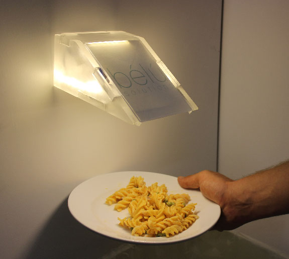
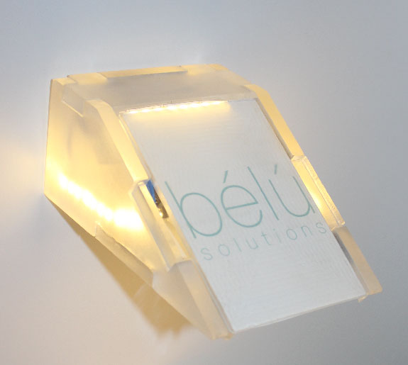
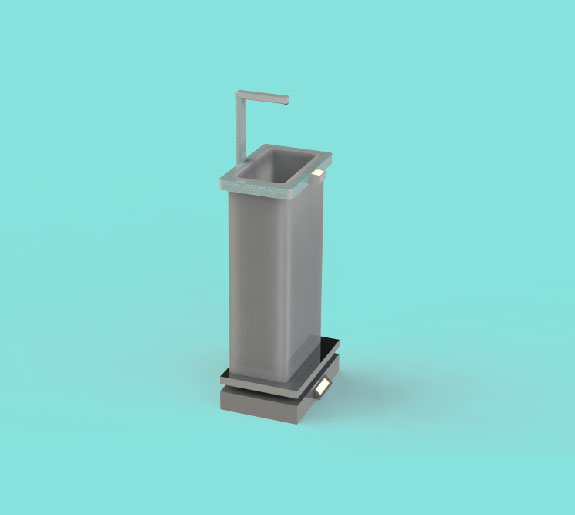
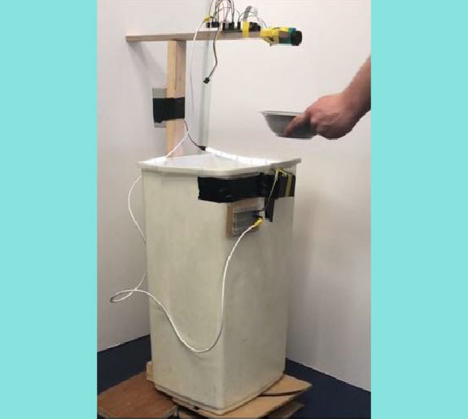
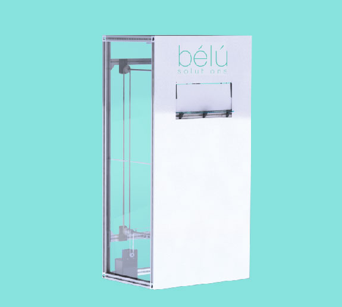
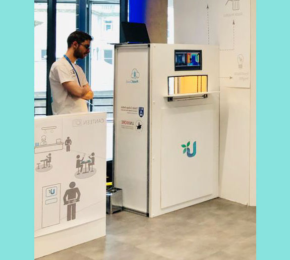
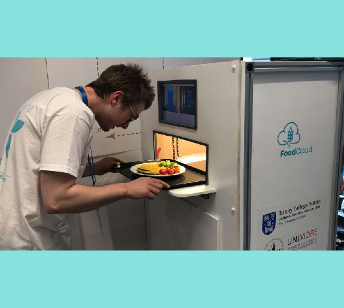
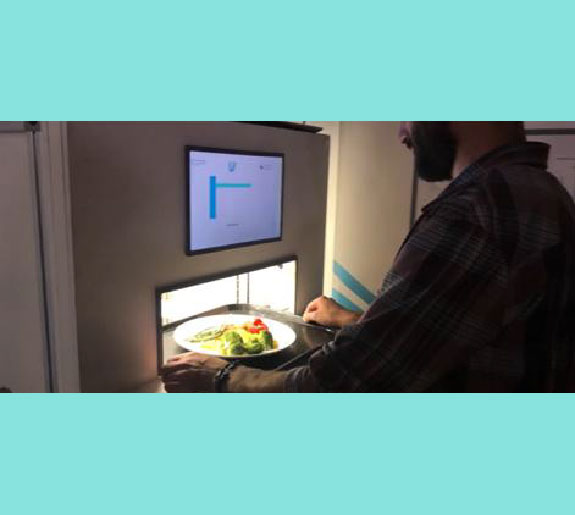
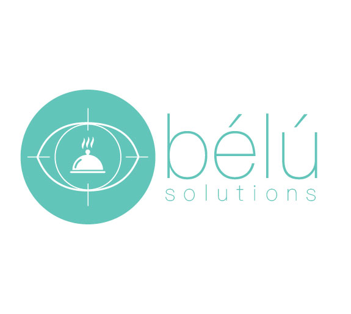
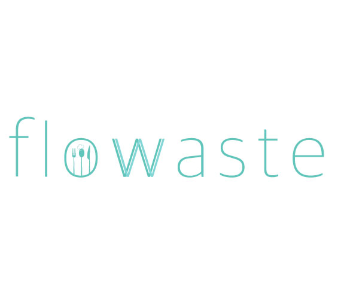

Co-founder of a startup aimed at reducing food waste in commercial kitchens

Bélú
Background
Co-founded Bélú, a waste analytics startup used to help restaurants reduce food waste, cut costs and in turn reduce their impact on the environment. The idea originated from an international product design module which I took as part of my masters. After completing my masters, myself and my co-founder continued working on the company for a year after receiving funding. The startup still exists today with different cofounders, under the name FloVision solutions and is valued at over $2 Million.
Problem Area
Over one ⅓ of all food produced worldwide is wasted, with the hospitality and food services sector being one of the biggest contributors. If food waste was a country it would be the largest greenhouse gas emitter in the world, after China and the USA. It’s not just the food that is being wasted, it is also wasting all of the time, money, water, labour and transport costs that it took to get the food from a farm to your plate.
Final Solution
The aim was to stop food waste at the source, before it is ordered, cooked or even grown by capturing, categorising and quantifying the food waste in restaurants. This information is gathered using computer vision, and then relayed to managers through an interactive dashboard. Enabling restaurants to have control over their inventory, save money and subsequently reduce their impact on the environment.


Design Development
We then built prototypes to test critical functions with our users and used their feedback and experiences to refine our design. This feedback from the users, observing them as they work, coupled with technical research and benchmarking reviews of existing technologies and patents allowed us to converge on a solution to the problem that fit our end users' needs.






Change in Design Focus
Our second design cycle began after receiving funding from the Launchbox Student Accelerator Program. This marked a shift in our design focus as now we not only had to think about how to fit our product to our users needs but we also had to make the idea financially viable. During this time we pitched to multiple investors and startup funds and focussed on honing our value proposition for our product. Coming from a engineering background this was an eye opening experience and we quickly had to learn to balance the commercial side of things with our need to drive the technical development of our product forward.
During our time in LaunchBox and after we refined our prototype design, developed an adaptable pitch deck while working on our business plan and developing a logo. The product was showcased at CES 2020 in Las Vegas.


Lessons Learned
- Working in fast paced design cycles.
- Rapid Prototyping.
- Adapting the same presentations for different audiences.
- Always keep the user at the centre of all of your design decisions.
- Should have documented the process by taking better pictures!